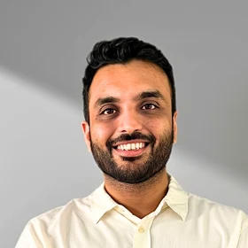

The Body in the Room
Integrating TRE™ and Somatic Practice into Psychotherapy: a trauma-informed approach. For psychologists, counsellors and narrative therapists who sense that talk alone isn't always enough, and want a safe, structured way to bring the body into their work. Led by Aun Ali.
When the Story Isn't Enough
Many of us were trained to work with stories, thoughts and meaning. Then we sat with clients who could tell their story perfectly and still feel unsafe in their own skin.
This workshop is a space for therapists and TRE™ practitioners to talk honestly about what changes when the body becomes part of the therapeutic process. We will look at the framework of trauma-informed care, and explore how and when TRE™ and other body-based practices can be woven into each stage of therapy — without overwhelming the client or abandoning your existing model.
From Trauma-Informed Principles to the Body
- The foundations of trauma-informed care. The core principles of safety, trust, choice, collaboration and empowerment — and what they look like in the body, not just on paper.
- The phased approach to trauma therapy. Stabilisation, processing and integration, and why the nervous system needs to feel safe before a story can be safely told.
- Where TRE™ fits in each phase. Using TRE™ and somatic tools for regulation and resourcing early on, titrated release during processing, and self-practice for long-term integration and reconnection.
- When to hold back. Recognising signs of overwhelm, dissociation and shutdown, understanding the window of tolerance, and knowing when body-based work is not the right step yet.
- Bridging talk and body. How psychologists, counsellors and narrative therapists can combine somatic awareness with their existing approach, including tracking sensation alongside the client's narrative.
- Real practice, real stories. Reflections from TRE™ practitioners on how including the body has shifted their work, their clients and themselves.
Therapists Curious About the Body
Psychologists, counsellors, narrative therapists, social workers, TRE™ students and certified providers, and any mental health professional curious about safely integrating somatic practice.
Led by Aun Ali

Aun Ali
Certified TRE™ Trainer · Founder, Trauma Release and Wellness Centre · Clinically Certified Trauma Specialist (CCTS-I, F, A)Aun's work sits at the meeting point of psychotherapy and the body: helping psychologists, counsellors and narrative therapists bring TRE™ and somatic practice into trauma-informed care safely, in the right phase, without abandoning the model they already trust.


What Happens When Therapy Makes Room for the Body?
One evening, online, with Aun Ali. Wednesday 25 November 2026, 7:00PM Singapore time.
Join on Zoom View All Events